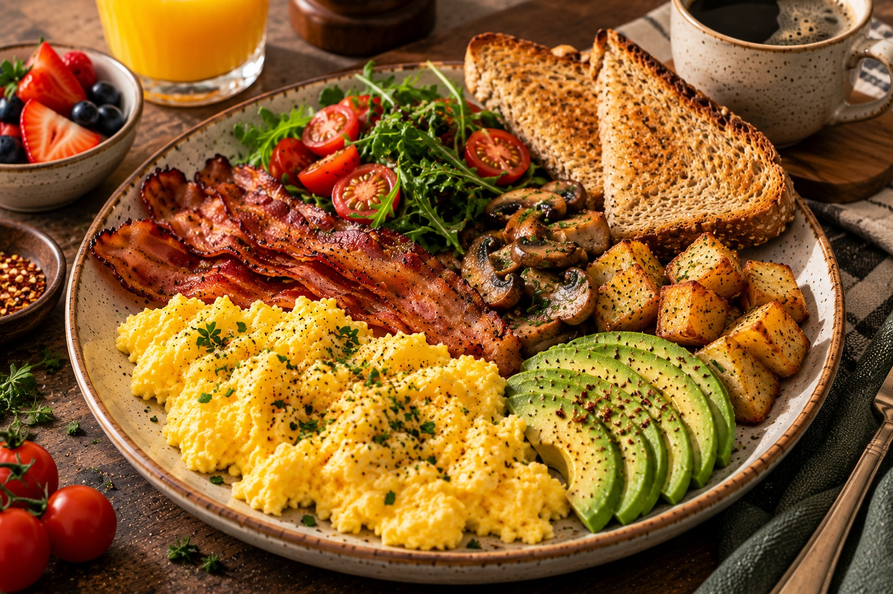

CLASSIC BREAKFAST PLATE
Warm, gooey, and made to melt your heart.
⏱ 30 min
Prep Time
⏱ 12 min
Cook Time
Easy
Difficulty
☆ 4.9
128 reviews
A hearty breakfast plate with fluffy scrambled eggs, crispy bacon, creamy avocado, toasted bread, and a fresh side salad. Perfect for a filling and delicious start to the day. Prep Time: 10 mins · Cook Time: 10 mins · Servings: 1